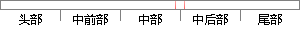

navigationController pushViewController:vc animated:YES];
片段位置图

相似结果|
相似片段 1：功能模块定义了一个继承自 RCConversationListViewController的 viewController 通过 navigationController?.pushViewController(v, animated: true)弹出聊天界面。
相似片段 2：:self.toUrl]];[[UINavigationController rootNavigationController]pushViewController:urlWebView animated:YES
相似片段 3：跳转，使用 navigationController?.pushViewController(v, animated: true)来弹出相应的界面。override func tableView
相似片段 4： pushViewController:controller animated:YES];[controller release];viewDidLoad方法中，设置页面 title为 string（ResurgentWaterViewController中定义的全局变量），指明四个 UILabel文字部分显示的内容。
相似片段 5：新页面控制器添加至导航控制器，实现页面跳转[self.navigationController pushViewController:controller animated:YES];//释放临时变量
相似片段 6：";[self.navigationController pushViewController:yuanliaoVc animated: YES];}78break;这里以“警告记录列表”为例来进行说明
相似片段 7：;[self.navigationController pushViewController:f animated:YES];用户可以通过 LinkManDetailView界面对联系人进行发送消息、移除联系人39等操作
|
※ 片段修改建议 ※
近似词参考：